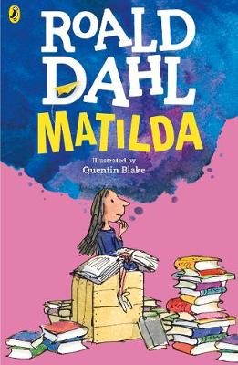

The world-famous story "Matilda" written by children's favourite author Roald Dahl, emphasizes on the life of a sweet and bright young girl, Matilda Wormwood. She is completely different from her family, who neglects her and treats her with disdain, and she tries to play pranks on them as well. By four years, she starts visiting the public library and reads several storybooks by renowned authors. At school, she comes in contact with Miss Honey who is astonished at her academic abilities. However, their entire school detests their dictatorial headmistress, Miss Agatha Trunchbull, and we come across a number of incidents where Miss Trunchbull treats the students, almost terrorizing them. While Matilda develops an unexpected power of telekinesis and reveals it to Miss Honey, the latter tells her own life story to the young girl. The story therefore goes on to reveal how little Matilda uses her power to help Miss Honey get back her inheritance from her bullying aunt and punish the dominating woman. Finally, when Matilda's family leaves for Spain, she and Miss Honey both find their happy ending and the school's atmosphere and curriculum under a new head.
